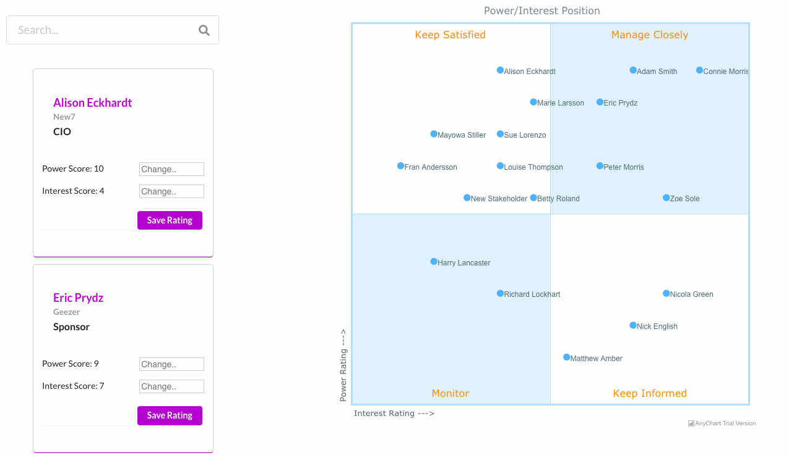
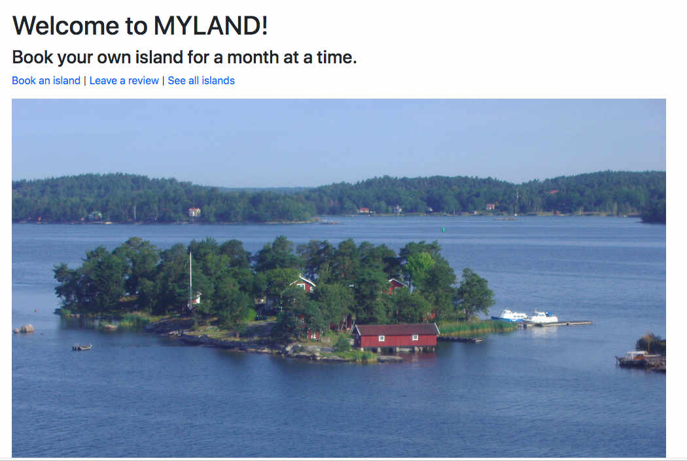
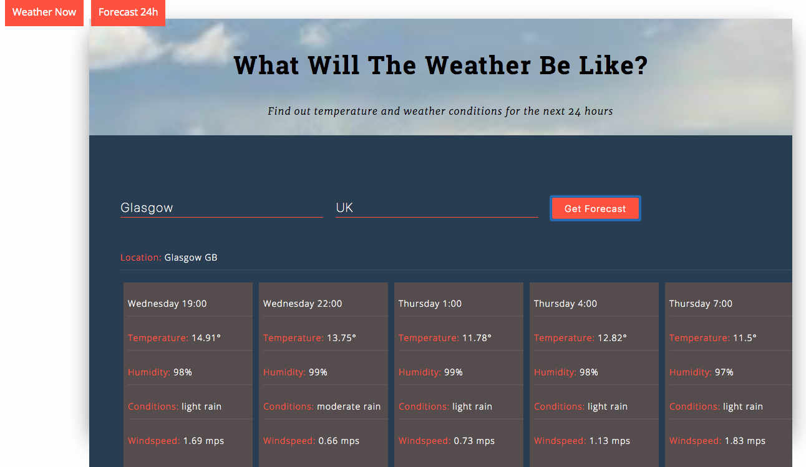

Susanne Lundkvist
Web Developer with Agile Product Management
experience.
Project & Programme Management background in operations
and sales & marketing.
I have been working for a global B2B and B2C corporation for 10 years as
well as partnering and running startups.
Have led several projects that have returned revenues significantly above
expectations and transformed the way of working.
I enjoy a cross-functional team environment,
solving problems with a result-focussed and creative approach.
Skills 💻
- JavaScript (ES6)
- React
- Ruby
- Rails
- HTML5
- CSS
- SQL
- Git and Github
- Google Analytics
- JIRA
- Product backlog refinement & prioritisation
- Product Discovery, Prototypes, Testing and Analysis
- Data Analytics, User Feedback
- Agile Practitioner, Scrum, Release and Sprint Planning
- Creating and communicating product vision, maintaining product roadmap
- Six Sigma process analysis and improvement
- Change Management incl. stakeholder management and change strategies
- Managed co-located and offshore teams
Projects 👷🏽♀️
Stakeholder Management App for Project Managers
A personal tool for project managers, where they can register and manage their project stakeholders, assigning strategies to influence them. Frontend is built in ReactJS and backend in Ruby on Rails. Anychart plug-in has been integrated for charts. The app is being developed further in separate repositories.
Myland
A Ruby on Rails app where the user can rent an island for a month. The user can view all the islands and their reviews, book and leave their own reviews.
Weather App
A ReactJS weather app using openweathermap.org API where the user keys in the location and can then see the current weather or a 24 hours forecast.
Recipes
A responsive ReactJS app that uses a 3rd party API to search and link to different recipe sites.

Experience 👩🏽💻
Product & Programme Manager
Member of the HiveMind Consultancy Network, - a trusted, integrated, worldwide network of 3,000 experts and micro-firms. Clients include McDonalds, Halma, Northern Gas Networks, Allianz, Money Supermarket.
- Consultant in product, project and programme management.
- Developing new value propositions in data analytics and project management.
Full Stack Software Engineering Bootcamp — Student
Full time student, learning to build apps using a variety of technologies, including, Ruby, Rails, JS, React, HTML, CSS, SQL.
Product & Business Interim Manager
Asked to help an independent designer to sell products online in Europe. (This site has been replaced by individual designer sites.)
- Took the product through discovery, prototyping and launch successfully.
- Created and managed an expanding product backlog for this “style and sustainability” online shop.
- Led a technical team for the set-up and further development of the eCommerce site.
- Procured platform and hosting services as well as marketing and technical support.
Product Owner and eBusiness Leader
The Linde Group is a €17bn global B2B and B2C provider of healthcare and industrial products and services operating in the chemical and pharmaceutical markets. Had global responsibility for the eCommerce platform and roll-out of online sales to new regions.
- Led the global eCommerce team including key business stakeholders in the regions across the world, the SAP team in Germany and a 40+ strong tech team in India.
- Increased online sales with 360% during my time in the role.
- Successfully rolled out eCommerce in China, HK, South Africa, US, Canada and UK.
- Developed and conducted a change programme improving regional readiness for the introduction of online sales.
- Authored guidelines for online marketing (SEO) and best practice eCommerce tools.
Programme Manager
Recruited from Sweden to lead the largest change initiative the UK & Ireland region had taken on.
- Managed a £20m investment where several millions of assets were registered and tracked individually through the supply chain at manufacturing, distribution, retailers, customers and back.
- Successfully changed 60% of all business processes resulting in 4.6 sigma compliance.
- Led the programme to achieve a return of 35% (ROI) versus an expected 20-25%.
Business Analyst & Six Sigma Black Belt
Managed the interface between business and IT for commercial systems, with focus on CRM processes and systems.
- Completed Six Sigma Black Belt training.
- Initiated and headed a Six Sigma project improving processes for online customer enquiries in four countries.
Sales Manager Scandinavia
Led a Scandinavian sales team and the development of the healthcare business strategy in Scandinavia.
- Represented the healthcare business in a major ERP replacement project, from bespoke to SAP software, resulting in a successful implementation with all healthcare processes fully supported.
Sales & Marketing Director, Partner
Partner and responsible for sales and marketing of a new software application for project and project portfolio management. This role included management consulting for The Linde Group in Scandinavia.
Brand Management Consultant & Project Manager
Brand Strategy Consultant and Project Manager in major web projects for Allianz, Africa Online, Sanofi Aventis and Stora Enso.
MD, Account Manager, Partner
Founded and established the advertising agency on the Swedish market. Achieved significant business growth, 75% YOY, as an account manager of one of Sweden’s largest insurers (Folksam) and Volkswagen Trucks & Buses.